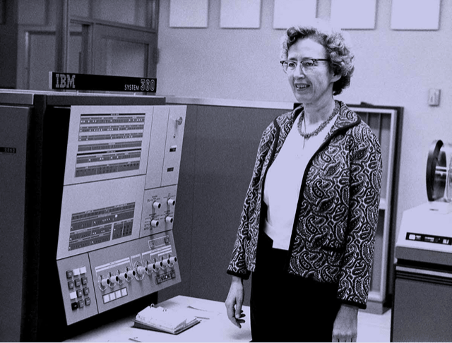
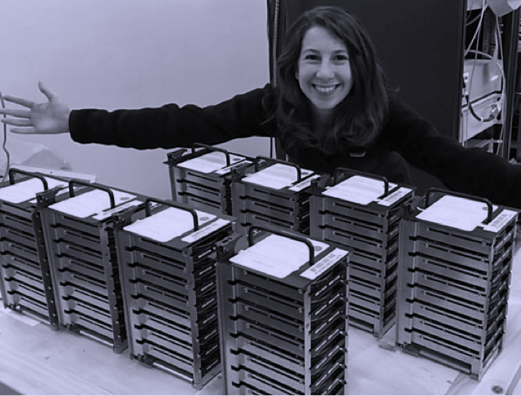
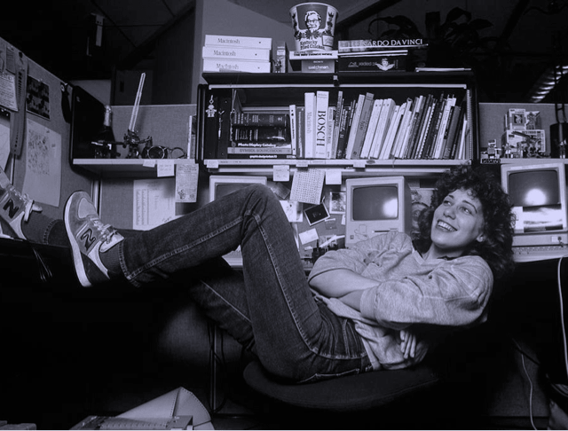
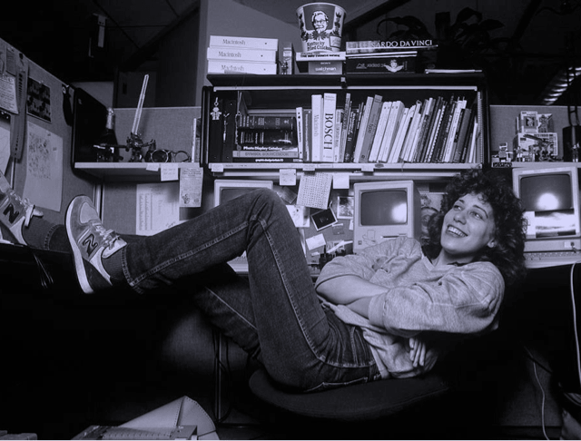
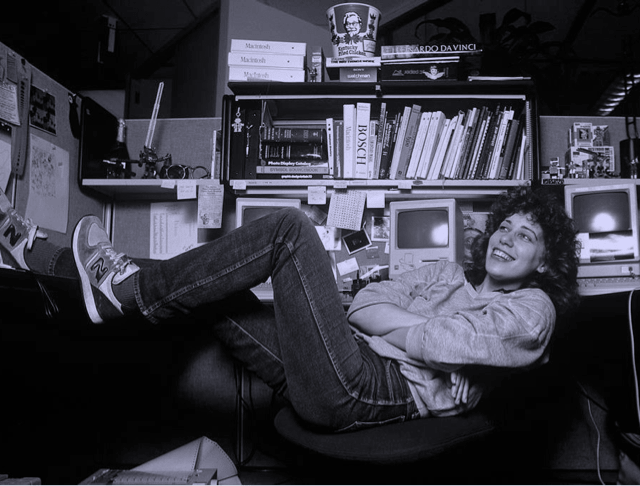
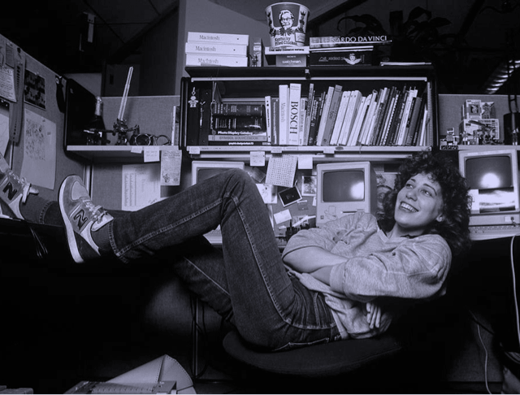

Invitadas/os estelares



 


Un podcast que explora el mundo de la programación y la tecnología. Nuevos episodios, todos los jueves cada 15 días.
CONOCÉ MÁSOur posturings, our imagined self-importance, the delusion that we have some privileged position in the Universe, are challenged by this point of pale light.
Our planet is a lenely speck in the great enveloping cosmic dark. In our obscurity, in all this vastness, there is no hint that help will come from elsewhere to save us from ourselves.
